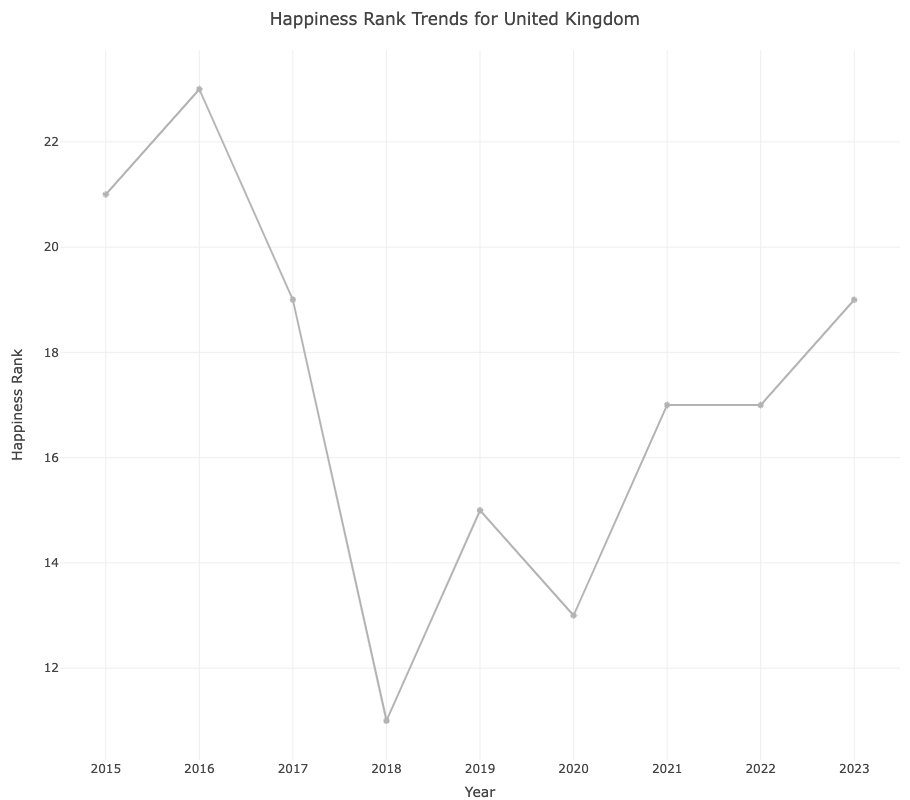

This project focuses on developing an interactive Shiny application to transform the intricate data from the World Happiness Report into an accessible and engaging platform for a diverse audience. While the report offers valuable insights into the happiness and well-being of individuals across countries, the complexity of the data often poses challenges in interpretation. Our objective is to simplify this process by creating an intuitive and user-friendly app that dynamically visualizes the data. The driving force behind our initiative is to bridge the gap between the richness of complex data and end-users seeking comprehension.
# Load necessary librarieslibrary(dplyr)# Read the 2015 datasetdf_2015 <-read.csv('data/2015.csv')# Select only the Country and Region columns and remove duplicatescountries_aggregated <- df_2015 %>%select(Country, Region) %>%distinct()# Save this new dataset to a CSV filewrite.csv(countries_aggregated, 'data/countries_aggregated.csv', row.names =FALSE)# Create a mapping of countries to regionscountry_region_map <- df_2015 %>%select(Country, Region) %>%unique()# Read the combined datasetdf_combined <-read.csv('data/happiness_all_years_df.csv')# Add the 'Region' column to the combined datasetdf_combined <- df_combined %>%left_join(country_region_map, by ="Country")df_combined <- df_combined %>%select(-1)# Check the first few rows of the updated combined datasethead(df_combined)
Country Happiness.Rank Happiness.Score GDP.per.Capita Family
1 Switzerland 1 7.587 1.39651 1.34951
2 Iceland 2 7.561 1.30232 1.40223
3 Denmark 3 7.527 1.32548 1.36058
4 Norway 4 7.522 1.45900 1.33095
5 Canada 5 7.427 1.32629 1.32261
6 Finland 6 7.406 1.29025 1.31826
Health..Life.Expectancy. Freedom Trust..Government.Corruption. Generosity
1 0.94143 0.66557 0.41978 0.29678
2 0.94784 0.62877 0.14145 0.43630
3 0.87464 0.64938 0.48357 0.34139
4 0.88521 0.66973 0.36503 0.34699
5 0.90563 0.63297 0.32957 0.45811
6 0.88911 0.64169 0.41372 0.23351
Dystopia.Residual Year Region
1 2.51738 2015 Western Europe
2 2.70201 2015 Western Europe
3 2.49204 2015 Western Europe
4 2.46531 2015 Western Europe
5 2.45176 2015 North America
6 2.61955 2015 Western Europe
# Save the updated combined datasetwrite.csv(df_combined, 'data/updated_happiness_all_years.csv', row.names =FALSE)
Country Happiness.Rank Happiness.Score Economy Family Health Freedom
1 Switzerland 1 7.587 1.39651 1.34951 0.94143 0.66557
2 Iceland 2 7.561 1.30232 1.40223 0.94784 0.62877
3 Denmark 3 7.527 1.32548 1.36058 0.87464 0.64938
4 Norway 4 7.522 1.45900 1.33095 0.88521 0.66973
5 Canada 5 7.427 1.32629 1.32261 0.90563 0.63297
6 Finland 6 7.406 1.29025 1.31826 0.88911 0.64169
Government.Corruption Generosity Dystopia.Residual Year Region
1 0.41978 0.29678 2.51738 2015 Western Europe
2 0.14145 0.43630 2.70201 2015 Western Europe
3 0.48357 0.34139 2.49204 2015 Western Europe
4 0.36503 0.34699 2.46531 2015 Western Europe
5 0.32957 0.45811 2.45176 2015 North America
6 0.41372 0.23351 2.61955 2015 Western Europe
# Save the updated combined datasetwrite.csv(cl_2015, 'data/happiness_2015_clean.csv', row.names =FALSE)#2016cl_2016 <-read.csv('data/cleaned_2016_df.csv')cl_2016 <- cl_2016 %>%left_join(country_region_map, by ="Country")#cl_2016 <- cl_2016 %>% select(-1)head(cl_2016)
Country Happiness.Rank Happiness.Score Economy Family Health Freedom
1 Denmark 1 7.526 1.44178 1.16374 0.79504 0.57941
2 Switzerland 2 7.509 1.52733 1.14524 0.86303 0.58557
3 Iceland 3 7.501 1.42666 1.18326 0.86733 0.56624
4 Norway 4 7.498 1.57744 1.12690 0.79579 0.59609
5 Finland 5 7.413 1.40598 1.13464 0.81091 0.57104
6 Canada 6 7.404 1.44015 1.09610 0.82760 0.57370
Government.Corruption Generosity Dystopia.Residual Year Region
1 0.44453 0.36171 2.73939 2016 Western Europe
2 0.41203 0.28083 2.69463 2016 Western Europe
3 0.14975 0.47678 2.83137 2016 Western Europe
4 0.35776 0.37895 2.66465 2016 Western Europe
5 0.41004 0.25492 2.82596 2016 Western Europe
6 0.31329 0.44834 2.70485 2016 North America
# Save the updated combined datasetwrite.csv(cl_2016, 'data/happiness_2016_clean.csv', row.names =FALSE)#2017cl_2017 <-read.csv('data/cleaned_2017_df.csv')cl_2017 <- cl_2017 %>%left_join(country_region_map, by ="Country")#cl_2017 <- cl_2017 %>% select(-1)head(cl_2017)
Country Happiness.Rank Happiness.Score Economy Family Health
1 Norway 1 7.537 1.616463 1.533524 0.7966665
2 Denmark 2 7.522 1.482383 1.551122 0.7925655
3 Iceland 3 7.504 1.480633 1.610574 0.8335521
4 Switzerland 4 7.494 1.564980 1.516912 0.8581313
5 Finland 5 7.469 1.443572 1.540247 0.8091577
6 Netherlands 6 7.377 1.503945 1.428939 0.8106961
Freedom Generosity Government.Corruption Dystopia.Residual Year
1 0.6354226 0.3620122 0.3159638 2.277027 2017
2 0.6260067 0.3552805 0.4007701 2.313707 2017
3 0.6271626 0.4755402 0.1535266 2.322715 2017
4 0.6200706 0.2905493 0.3670073 2.276716 2017
5 0.6179509 0.2454828 0.3826115 2.430182 2017
6 0.5853845 0.4704898 0.2826618 2.294804 2017
Region
1 Western Europe
2 Western Europe
3 Western Europe
4 Western Europe
5 Western Europe
6 Western Europe
# Save the updated combined datasetwrite.csv(cl_2017, 'data/happiness_2017_clean.csv', row.names =FALSE)#2018cl_2018 <-read.csv('data/cleaned_2018_df.csv')cl_2018 <- cl_2018 %>%left_join(country_region_map, by ="Country")#cl_2018 <- cl_2018 %>% select(-1)head(cl_2018)
Happiness.Rank Country Happiness.Score Economy Family Health Freedom
1 1 Finland 7.632 1.305 1.592 0.874 0.681
2 2 Norway 7.594 1.456 1.582 0.861 0.686
3 3 Denmark 7.555 1.351 1.590 0.868 0.683
4 4 Iceland 7.495 1.343 1.644 0.914 0.677
5 5 Switzerland 7.487 1.420 1.549 0.927 0.660
6 6 Netherlands 7.441 1.361 1.488 0.878 0.638
Generosity Government.Corruption Dystopia.Residual Year Region
1 0.202 0.393 NA 2018 Western Europe
2 0.286 0.340 NA 2018 Western Europe
3 0.284 0.408 NA 2018 Western Europe
4 0.353 0.138 NA 2018 Western Europe
5 0.256 0.357 NA 2018 Western Europe
6 0.333 0.295 NA 2018 Western Europe
# Save the updated combined datasetwrite.csv(cl_2018, 'data/happiness_2018_clean.csv', row.names =FALSE)#2019cl_2019 <-read.csv('data/cleaned_2019_df.csv')cl_2019 <- cl_2019 %>%left_join(country_region_map, by ="Country")#cl_2019 <- cl_2019 %>% select(-1)head(cl_2019)
Happiness.Rank Country Happiness.Score Economy Family Health Freedom
1 1 Finland 7.769 1.340 1.587 0.986 0.596
2 2 Denmark 7.600 1.383 1.573 0.996 0.592
3 3 Norway 7.554 1.488 1.582 1.028 0.603
4 4 Iceland 7.494 1.380 1.624 1.026 0.591
5 5 Netherlands 7.488 1.396 1.522 0.999 0.557
6 6 Switzerland 7.480 1.452 1.526 1.052 0.572
Generosity Government.Corruption Dystopia.Residual Year Region
1 0.153 0.393 NA 2019 Western Europe
2 0.252 0.410 NA 2019 Western Europe
3 0.271 0.341 NA 2019 Western Europe
4 0.354 0.118 NA 2019 Western Europe
5 0.322 0.298 NA 2019 Western Europe
6 0.263 0.343 NA 2019 Western Europe
# Save the updated combined datasetwrite.csv(cl_2019, 'data/happiness_2019_clean.csv', row.names =FALSE)#2020cl_2020 <-read.csv('data/cleaned_2020_df.csv')cl_2020 <- cl_2020 %>%left_join(country_region_map, by ="Country")#cl_2020 <- cl_2020 %>% select(-1)head(cl_2020)
Country Happiness.Rank Happiness.Score Economy Family Health
1 Finland 1 7.8087 1.285190 1.499526 0.9612714
2 Denmark 2 7.6456 1.326949 1.503449 0.9793326
3 Switzerland 3 7.5599 1.390774 1.472403 1.0405332
4 Iceland 4 7.5045 1.326502 1.547567 1.0008434
5 Norway 5 7.4880 1.424207 1.495173 1.0080719
6 Netherlands 6 7.4489 1.338946 1.463646 0.9756753
Freedom Generosity Government.Corruption Dystopia.Residual Year
1 0.6623167 0.1596704 0.4778573 2.762835 2020
2 0.6650399 0.2427934 0.4952603 2.432741 2020
3 0.6289545 0.2690558 0.4079459 2.350267 2020
4 0.6619807 0.3623302 0.1445408 2.460688 2020
5 0.6702009 0.2879851 0.4341006 2.168266 2020
6 0.6136265 0.3363176 0.3685698 2.352117 2020
Region
1 Western Europe
2 Western Europe
3 Western Europe
4 Western Europe
5 Western Europe
6 Western Europe
# Save the updated combined datasetwrite.csv(cl_2020, 'data/happiness_2020_clean.csv', row.names =FALSE)#2021cl_2021 <-read.csv('data/cleaned_2021_df.csv')cl_2021 <- cl_2021 %>%left_join(country_region_map, by ="Country")#cl_2021 <- cl_2021 %>% select(-1)head(cl_2021)
Country Happiness.Rank Happiness.Score Economy Family Health Freedom
1 Finland 1 7.842 1.446 1.106 0.741 0.691
2 Denmark 2 7.620 1.502 1.108 0.763 0.686
3 Switzerland 3 7.571 1.566 1.079 0.816 0.653
4 Iceland 4 7.554 1.482 1.172 0.772 0.698
5 Netherlands 5 7.464 1.501 1.079 0.753 0.647
6 Norway 6 7.392 1.543 1.108 0.782 0.703
Generosity Government.Corruption Dystopia.Residual Year Region
1 0.124 0.481 3.253 2021 Western Europe
2 0.208 0.485 2.868 2021 Western Europe
3 0.204 0.413 2.839 2021 Western Europe
4 0.293 0.170 2.967 2021 Western Europe
5 0.302 0.384 2.798 2021 Western Europe
6 0.249 0.427 2.580 2021 Western Europe
# Save the updated combined datasetwrite.csv(cl_2021, 'data/happiness_2021_clean.csv', row.names =FALSE)#2022cl_2022 <-read.csv('data/cleaned_2022_df.csv')cl_2022 <- cl_2022 %>%left_join(country_region_map, by ="Country")#cl_2022 <- cl_2022 %>% select(-1)head(cl_2022)
Happiness.Rank Country Happiness.Score Dystopia.Residual Economy Family
1 1 Finland 7.821 2.518 1.892 1.258
2 2 Denmark 7.636 2.226 1.953 1.243
3 3 Iceland 7.557 2.320 1.936 1.320
4 4 Switzerland 7.512 2.153 2.026 1.226
5 5 Netherlands 7.415 2.137 1.945 1.206
6 6 Luxembourg* 7.404 2.042 2.209 1.155
Health Freedom Generosity Government.Corruption Year Region
1 0.775 0.736 0.109 0.534 2022 Western Europe
2 0.777 0.719 0.188 0.532 2022 Western Europe
3 0.803 0.718 0.270 0.191 2022 Western Europe
4 0.822 0.677 0.147 0.461 2022 Western Europe
5 0.787 0.651 0.271 0.419 2022 Western Europe
6 0.790 0.700 0.120 0.388 2022 <NA>
# Save the updated combined datasetwrite.csv(cl_2022, 'data/happiness_2022_clean.csv', row.names =FALSE)#2023cl_2023 <-read.csv('data/cleaned_2023_df.csv')cl_2023 <- cl_2023 %>%left_join(country_region_map, by ="Country")#cl_2023 <- cl_2023 %>% select(-1)head(cl_2023)
Country Happiness.Rank Happiness.Score Economy Family Health Freedom
1 Finland 1 7.804 1.888 1.585 0.535 0.772
2 Denmark 2 7.586 1.949 1.548 0.537 0.734
3 Iceland 3 7.530 1.926 1.620 0.559 0.738
4 Israel 4 7.473 1.833 1.521 0.577 0.569
5 Netherlands 5 7.403 1.942 1.488 0.545 0.672
6 Sweden 6 7.395 1.921 1.510 0.562 0.754
Generosity Government.Corruption Dystopia.Residual Year
1 0.126 0.535 2.363 2023
2 0.208 0.525 2.084 2023
3 0.250 0.187 2.250 2023
4 0.124 0.158 2.691 2023
5 0.251 0.394 2.110 2023
6 0.225 0.520 1.903 2023
Region
1 Western Europe
2 Western Europe
3 Western Europe
4 Middle East and Northern Africa
5 Western Europe
6 Western Europe
# Save the updated combined datasetwrite.csv(cl_2023, 'data/happiness_2023_clean.csv', row.names =FALSE)
Introduction
In a world that constantly grapples with various challenges, understanding what contributes to human happiness has never been more crucial. The World Happiness Application is designed to unravel the complexities of what makes societies thrive in terms of happiness and well-being. Drawing upon data from the esteemed World Happiness Report, this interactive Shiny application offers a multifaceted view of global happiness dynamics.
The application is built on a foundation of robust and clean data, sourced from the comprehensive annual reports that explore the state of global happiness. These reports rank countries based on several happiness indicators including economic factors like GDP per capita, social factors like family and community support, health life expectancy, personal freedom, perceived government and business corruption, and generosity. By amalgamating data from the years 2015 to 2023, our application provides a unique longitudinal perspective on how happiness indices have evolved globally.
One of the core features of the World Happiness Application is its interactivity and user-friendly interface, developed using R Shiny, a powerful web application framework. Users can engage with a variety of data visualizations, including scatter plots, time series graphs, and heatmaps, to delve deeper into the happiness trends of different countries and regions. Each visualization is designed to be both informative and intuitive, offering users the flexibility to select specific years, countries, and happiness variables for comparison.
A key aspect of the application is the “Happiness Trends” plot, which visualizes how the happiness ranks of various countries have shifted over the years, providing insights into the trajectories of nations in their pursuit of well-being. Another highlight is the “World Heatmap,” a choropleth map that vividly depicts happiness rankings across the globe, inviting users to explore geographical patterns in happiness.
Question 1: Aspects influencing well-being over time.
Introduction
How do various factors impact the overall happiness score across different countries over the years?
We explore the complex interactions between many elements that affect general well-being in our quest to comprehend happiness on a global scale. We seek to understand how factors, such as economic stability, family support, health, freedom, trust in society, and generosity, affect the overall happiness scores throughout time and in different nations. By enabling users to interact with the data, this exploration reveals the complex connections between these important variables and the pursuit of happiness as a group.
In our pursuit to understand happiness on a global scale, we delve into the intricate interplay of diverse factors that contribute to overall well-being. By examining economic stability, family support, health, freedom, trust in society, and generosity, we aim to discern how these facets influence the overarching happiness scores across different countries and over time. This exploration empowers users to interactively engage with data, unraveling the intricate relationship between these pivotal factors and the collective pursuit of happiness.
Approach
In our interactive Shiny application, we offer users an intuitive platform for dynamic data exploration. Featuring three dropdown menus for the x-axis, y-axis, and country selection (allowing multi-country selection), alongside nine buttons for years spanning from 2015 to 2023, users can precisely pinpoint specific years for analysis. Additionally, a slider facilitates the selection of the number of countries to display.
The heart of the app resides in the ‘Plot’ tab, where users can select any two factors, including the happiness score, for the x and y axes. Each selection generates a data point on the graph, and upon hovering over these points, Plotly provides detailed insights related to the chosen factors and countries. This setup grants users the power to delve into individual factor analyses and country comparisons, fostering a deeper understanding of the data dynamics.
Analysis
The Happiness Report examining six factors in the year 2019 as an example.
Discussion
Across the temporal spectrum from 2015 to 2023, our observation between Family (social support) and Happiness Score revealed intriguing insights. Initially, higher degrees of family support aligned with notably higher happiness scores. Subsequently, while the scores remained elevated, both the number of instances and the degree of family support slightly decreased. However, a resurgence followed, mirroring the initial phase’s trend before experiencing a slight decline towards the end. Overall, this analysis underscores a proportional relationship, emphasizing that increased family support correlates positively with higher happiness scores—a compelling testament to its pivotal role as a contributing factor in fostering well-being.
The correlation between health and happiness scores appears relatively consistent from 2015 to 2023, showing limited variations. Western European countries consistently maintain top positions, while Sub-Saharan African nations consistently rank at the bottom in this regard. Over the years, a clear pattern emerged: as the economy (GDP per capita) grew, so did happiness scores. Though the intensity varied, the trend remained consistent. In 2022, this link intensified, indicating a proportional relationship between a thriving economy and higher happiness.
When comparing Trust (government corruption) and Happiness Score across countries, intriguing trends emerged. Western European nations like Finland, Denmark, Switzerland, and Sweden showed higher corruption levels but sustained higher happiness. Conversely, countries like New Zealand, Singapore, and Qatar followed a similar pattern. Rwanda depicted the highest corruption and lowest happiness, while Sub-Saharan and some Eastern European nations showcased lower corruption but also lower happiness levels overall.
Upon analyzing the relationship between happiness scores and freedom, it’s evident that since 2019, Afghanistan consistently exhibits the lowest happiness score. Meanwhile, the Western European region consistently maintains a top-ranking position in happiness scores from 2015 to 2023. When examining the correlation between happiness scores and generosity, it becomes evident that Finland consistently secures the top position throughout the years 2015 to 2023 in terms of happiness scores.
Question 2: Patterns of change in happiness scores related to global events.
From 2015 to 2023, a series of major global events significantly impacted the happiness scores of various countries. These events, ranging from economic crises to geopolitical conflicts and health emergencies, have caused notable fluctuations in global happiness levels. In this brief introduction, we will list some of these key events and identify the countries most affected by them.
Major Events Affecting Happiness Scores (2015-2023):
2016 Brexit Vote:
The United Kingdom experienced political and economic uncertainty, affecting its happiness scores, as well as indirect impacts on EU member states.

Brexit Vote affecting happiness score in UK
In 2016, the graph shows that the happiness rank for the United Kingdom increased, indicating a decrease in happiness. This is likely due to the uncertainty and division caused by the Brexit vote, as it introduced concerns about the UK’s economic future and its citizens’ identity within Europe. Such socio-political events typically create anxiety and can negatively impact the overall mood of the nation.
2017-2018 US-China Trade War:
Led to economic repercussions in the United States and China, as well as in countries with strong trade ties to these nations.
US_China Trade War
The 2017-2018 US-China trade war had a significant impact on the happiness ranks of both countries. It led to economic uncertainties, job losses, and disrupted trade, which can contribute to decreased happiness among the population. The trade war also affected global economic stability, indirectly influencing happiness ranks in other nations closely tied to the US-China trade relationship.
2019-2023 COVID-19 Pandemic:
Globally affected all countries, with significant impacts on mental health, economic stability, and overall happiness. Countries like Italy, Spain, the United States, Brazil, and India were among the hardest hit due to high infection and mortality rates.
Covid-19 effect on happiness rank
The graph indicates a general increase in happiness rank for most regions during the COVID-19 pandemic, suggesting a decline in happiness. Some regions show recovery post-pandemic, while others continue to experience lower happiness levels, with varying impacts across different parts of the world. india, china, Usa
2022 Pakistan Floods:
Heavy monsoon rains led to catastrophic flooding in Pakistan, causing massive displacement and damage to infrastructure and potentially affecting the happiness rank.
Pakistan floods affecting happiness rank
In 2022, Pakistan experienced a significant increase in its happiness rank, signifying a decrease in happiness. This was likely influenced by catastrophic flooding caused by heavy monsoon rains, resulting in displacement and infrastructure damage, which typically lowers overall happiness.
Conclusion
The World Happiness Application is not just a tool for data exploration; it is a window into the diverse and dynamic nature of global well-being. It serves as a valuable resource for researchers, policymakers, educators, and anyone interested in the study of happiness. By offering user-driven, interactive data analysis, it empowers users to uncover the complex tapestry of factors that contribute to a happier and more fulfilling global society.